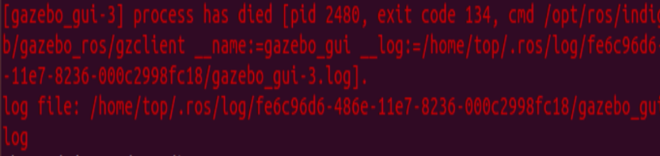

RotorS with virtual joystick
使用键盘控制无人机
使用mav_with_keyboard.launch可以打开gazebo以及相关的控制界面，但需要做一些基础配置。
roslaunch rotors_gazebo mav_with_keyboard.launch mav_name:=firefly world_name:=basic
设置虚拟键盘控制器
配置原文 : Setup virtual keyboard joystick · ethz-asl/rotors_simulator Wiki (github.com)
为了创建虚拟键盘控制器，需要用到Python-uniput(https://github.com/devbharat/python-uinput)
安装 Python-uniput
源仓库仅需要暂时复制一份以供安装使用
git clone git@github.com:devbharat/python-uinput.git
cd python-uinput
python setup.py build
sudo python setup.py install
需要加载内核的uinput模块，才能使用Python-uniput。使用以下命令加载：
modprobe -i uinput
uinput是一个内核模块，可以从用户空间模拟输入设备。通过写入 /dev/uinput（/dev/input/uinput）设备，进程可以创建具有特定功能的虚拟输入设备。一旦创建了这个虚拟设备，进程就可以通过它发送事件，这些事件将被传递给用户空间和内核中的使用者。
配置设备权限
我们需要程序能够访问uniput设备，执行以下操作并重启：
cd udev-rules
sudo cp 40-uinput.rules /etc/udev/rules.d
如果没有生效，则需要将用户添加到uniput的组中，同时重启：
sudo addgroup uniput
sudo adduser $USER uniput
安装Python-pygame
# python2
sudo python -m pip install -U pygame
测试虚拟键盘控制器
# 先切换到工作空间下
source ./devel/setup.bash
# 启动控制器
rosrun rotors_joy_interface key_joystick.py
如果能正常弹出虚拟键盘控制器的GUI，即说明一切正常。
安装ROS控制杆依赖包
根据ROS配置，可能需要安装控制杆的依赖包：
sudo apt-get install ros-kinetic-joy
使用虚拟控制杆运行RotorS
roslaunch rotors_gazebo mav_with_keyboard.launch
相关键盘操作
w - throttle up ↑ - pitch up
s - throttle down ↓ - pitch down
a - yaw left → - roll right
d - yaw right ← - roll left
相关问题
Error 1 : Unable to find uri [model://xxx]
错误描述
Error [parser.cc:581] Unable to find uri[model://sun]
Error [parser.cc:581] Unable to find uri[model://ground_plane]
解决方案
Gazebo 需要互联网连接才能下载模型文件（例如默认世界的太阳和地平面）。如果您在第一次运行 Gazebo 时没有访问 Internet，则会出现此错误。还可以从gazebosim.org/models 手动下载模型文件并将它们放在您的~/.gazebo/models文件夹中。
# 解压缩
tar -xzvf models.tar.gz
Error 2 : gazebo闪退
错误描述
[gazebo_gui-3]process has died

解决方案
方法1
使用以下命令关闭硬件加速
echo " export SVGA_VGPU10=0" >> ~/.bashrc
source ~/.bashrc
方法2
关闭虚拟机的3D图形加速
方法3
更新gazebo